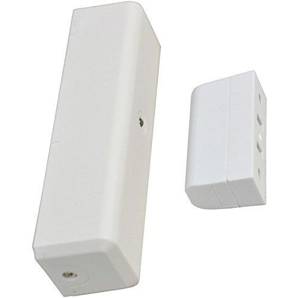
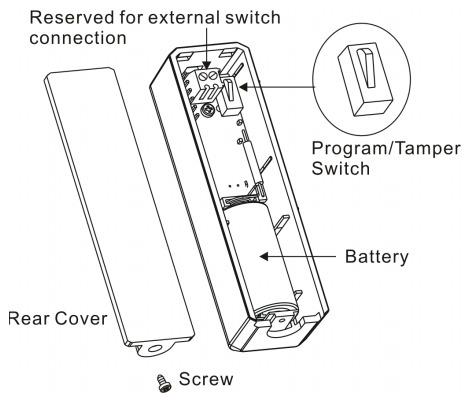

Gocontrol door window sensor¶
GoControl Z-Wave Door/Window Sensor - WADWAZ-1¶

Overview¶
- During normal operation with the door or window closed, the detector’s red LED will be off.
- When the magnet moves away from the sensor as the door or window opens, the sensor will send an alarm signal to any associated nodes and the red LED will flash once.
- When the magnet moves back towards the sensor as the door or window closes, the sensor will send a restore signal to any associated nodes and the red LED will flash once.
- The sensor is equipped with a tamper switch. If the sensor is removed from the mounting plate, it will send a tamper alarm signal and the red LED will light constant
Specification¶
- Battery: CR123A Lithium Battery
- Z-Wave frequency: 908.42 MHz
- Operating temperature: 5°F~140°F / -15°C~ 60°C
- Repeater: Yes
- Range: Up to 100 feet line of sight between the Z-Wave Controller and/or the closest Z-Wave Repeater
Inclusion/Exclusion to/from a network¶

- Put controller to Inclusion/Exclusion mode
- Remove cover then press program button once to reset
- Press program button once again to include
- Wait for controller completes inclusion/exclusion process
Configuration description¶
There is no configuration for this device.